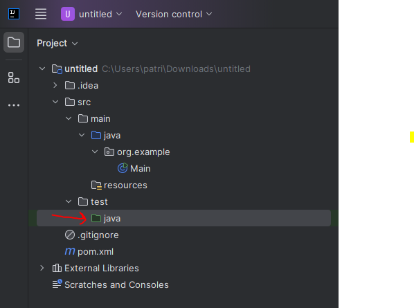
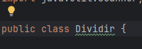
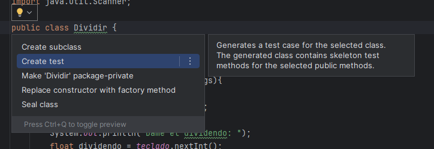
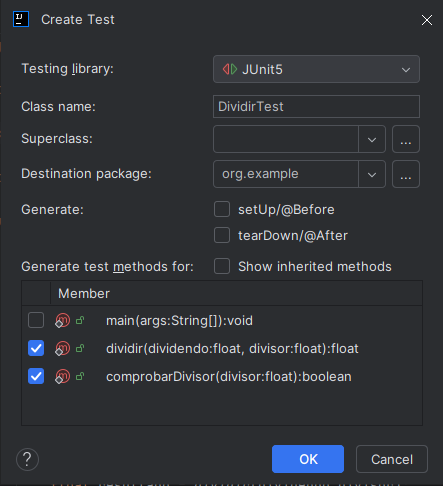
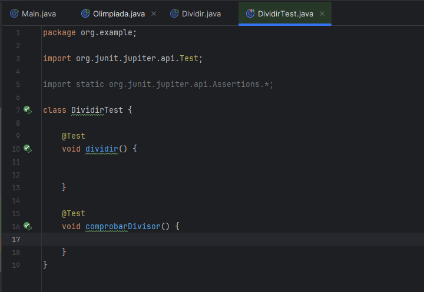
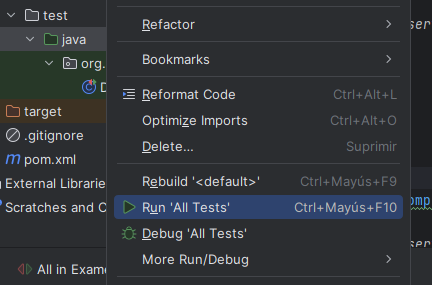
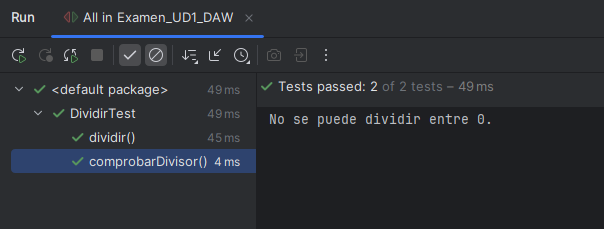

Como ya te habrás dado cuenta, en el desarrollo de software las pruebas son una parte fundamental para garantizar la calidad y fiabilidad de nuestras aplicaciones. Una de las herramientas más populares y potentes para realizar pruebas unitarias en Java es JUnit, un marco de trabajo que nos permite escribir y ejecutar pruebas de manera sencilla y eficiente.
Tutorial de iniciación a JUnit
1. Detecta en tu proyecto la carpeta llamada test y comprueba que contiene una carpeta verde, llamada java:

2. Crea o ubica alguna clase que contenga algún ejercicio sencillo que tengas en tu proyecto. Por ejemplo, el siguiente programa calcula el resultado de una división:
import java.util.Scanner;
public class Dividir {
static Scanner teclado;
public static void main (String[] args){
teclado = new Scanner(System.in);
System.out.println("Dame el dividendo: ");
float dividendo = teclado.nextInt();
System.out.println("Dame el divisor: ");
float divisor = teclado.nextInt();
boolean ok = comprobarDivisor(divisor);
if (ok){
float resultado = dividir(dividendo,divisor);
System.out.println("El resultado es " + resultado);
}
}
public static float dividir(float dividendo, float divisor){
return dividendo / divisor;
}
public static boolean comprobarDivisor(float divisor){
if (divisor==0){
System.out.println("No se puede dividir entre 0.");
return false;
}
return true;
}
}3. Sitúa tu ratón en la cabecera de la definición de la clase, y ubica la bombilla típica que activa IntelliJ IDEA:

4. Haz click sobre ella y elige la opción Create test:

5. En la siguiente pantalla elegiremos los métodos que queremos testear y aceptamos:

6. Se creará una clase nueva que se abrirá automáticamente. Observa que crea un método para cada método que le hemos dicho que vamos a testear, con el mismo nombre:

8. Es hora de empezar a rellenar nuestros tests...
import org.junit.jupiter.api.Test;
import static org.junit.jupiter.api.Assertions.*;
class DividirTest {
@Test
void dividir() {
assertAll(() -> assertEquals(1, Dividir.dividir(2, 2)),
() -> assertEquals(-1, Dividir.dividir(2, -2)),
() -> assertEquals(-5, Dividir.dividir(-10, 2)),
() -> assertEquals(12.5, Dividir.dividir(25, 2)));
}
@Test
void comprobarDivisor() {
assertAll(() -> assertTrue(Dividir.comprobarDivisor(2)),
() -> assertFalse(Dividir.comprobarDivisor(0)),
() -> assertTrue(Dividir.comprobarDivisor(-7)));
}
}9. Para ejecutarlos, simplemente deberemos hacer click sobre la carpeta verde vista anteriormente, y ejecutar la opción Run All Tests:

